力推的翻译软件
给大家盘点一下，有哪些好用的机器翻译工具。本文选择几个大厂开发的翻译工具，以及小众翻译神器，进行两段材料的翻译，一段偏向文学性，一段偏专业性，多少句理论介绍都不如来几句实在的翻译。
这是两段材料的原文和参考译文。分别是《小王子》节选和科普文章。
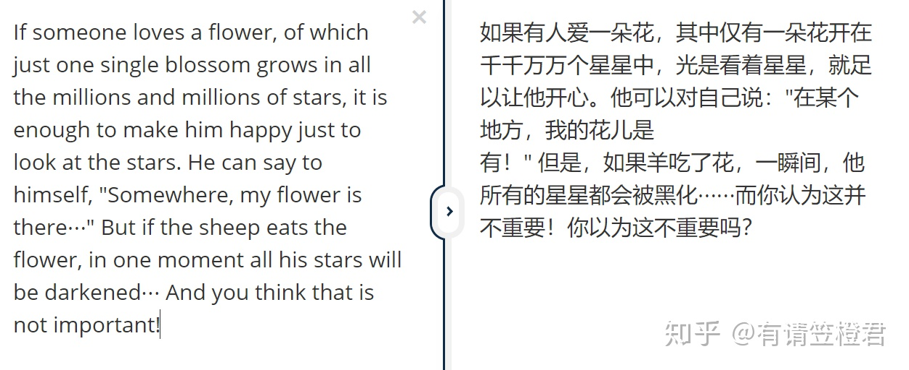 图片11.DeepL
传送门：www.deepl.com
准确度：⭐⭐⭐⭐⭐
通顺度：⭐⭐⭐⭐
一家德国科技公司开发的翻译软件。号称强过谷歌翻译，机器翻译在盲测中秒杀同行业产品，到底是有没有这么神奇呢，我用一段小王子英文原文和一段科技原文来测试一下，看一下文学作品和专业名词多的文章翻译水平。
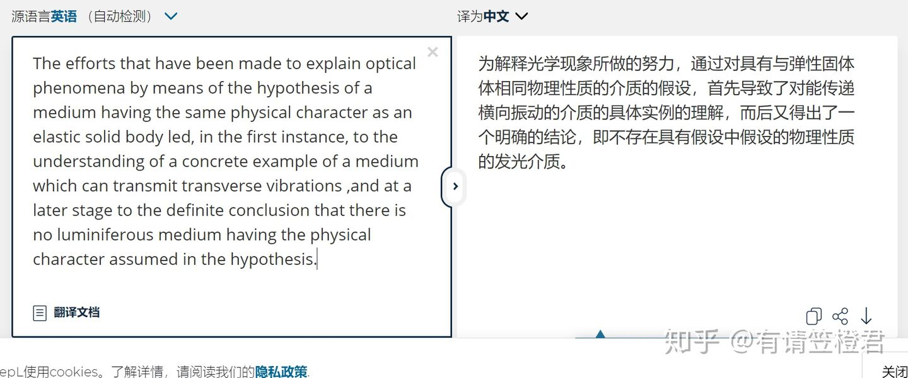 图片2这段小王子翻译与人工翻译对比，准确性还是不错的，但是文学性和口语性稍有欠缺，不过darkened能翻译出黑化也出乎我所料，蛮人性化的。
图片3这段翻译给予好评，专业名词以及通顺性都超过标准。翻译起来也通俗易懂。总的来说，译文比较准确且流畅，很多句子很有人工翻译的感觉，总体给与好评。
2.有道翻译
有道翻译是网易公司开发的一款翻译软件，其最大特色在于翻译引擎是基于搜索引擎，网络释义的，也就是说它所翻译的词释义都是来自网络。作为国产之光的有道翻译，能有什么表现呢？
传送门：fanyi.youdao.com
准确度：⭐⭐⭐⭐
通顺度：⭐⭐⭐⭐
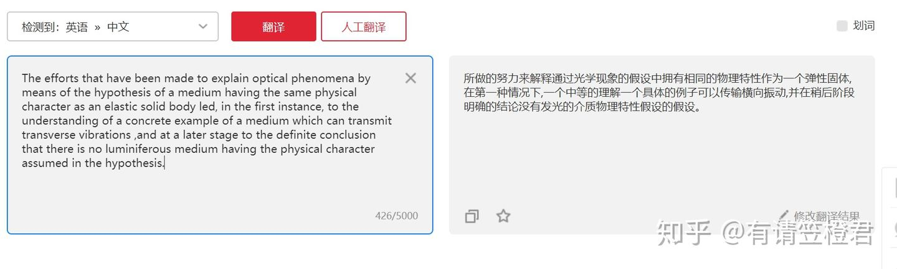 图片4意外的惊喜，句子通顺，符合国人的阅读标准，能翻译出小说的感觉，文学性也很足。
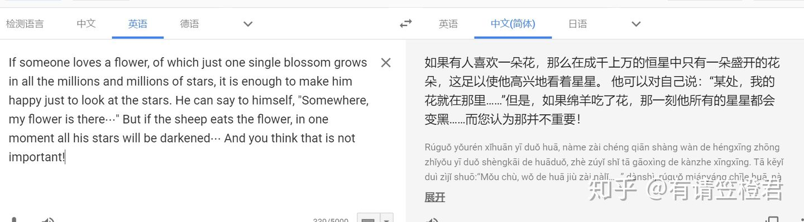 图片5有道在翻译这种专业性的文字时显得后劲不足，语句没有很好的结合起来，但总体也能接受。
3.谷歌翻译
老牌的权威的翻译工具，Google 翻译是谷歌公司提供一项免费的翻译服务，可提供103 种语言之间的即时翻译，支持任意两种语言之间的字词、句子和网页翻译。
传送门：translate.google.cn
准确度：⭐⭐⭐⭐
通顺度：⭐⭐
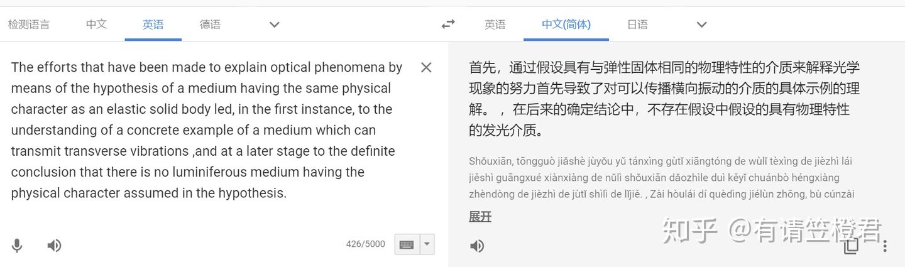 图片6在英译中的文学翻译上，有道做的还是比谷歌翻译好，这部分也可能是因为中文译文的语料库有道更占优势。国外的翻译思路和行文习惯与国内则不同。
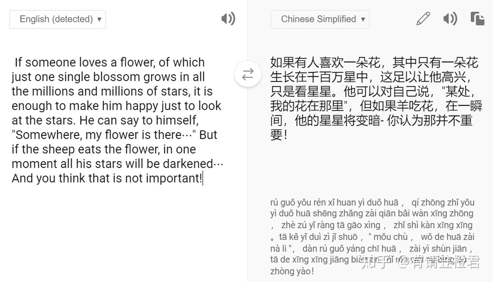 图片7专业词汇倒是翻译出来了，但语句实在是不敢恭维，跟国人阅读习惯差距蛮大的。
4.必应翻译
必应翻译(Bing Translator)是微软推出的免费在线翻译服务,既可以翻译文本也可以翻译网页。它能够支持40多种语言互译。借助微软强大的语料库资源，翻译质量普遍较高！
传送门：www.sowang.com
准确度：⭐⭐⭐⭐
通顺度：⭐⭐⭐
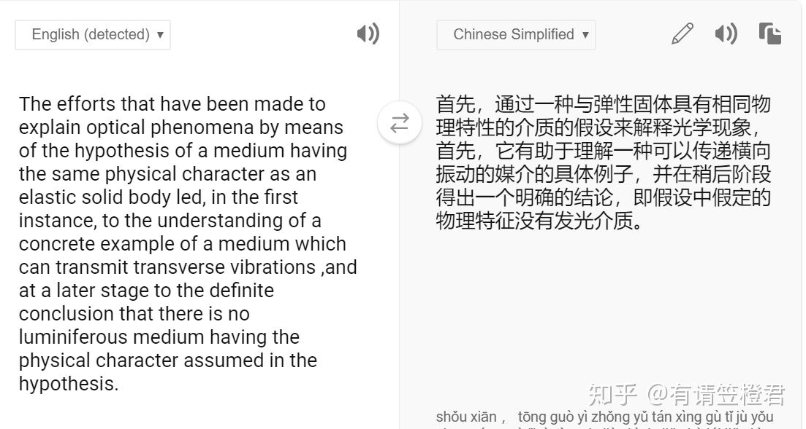 图片8 图片9
图片9
跟谷歌有点类似，但通顺程度比谷歌稍好，建议英译中的文学性翻译还是用国内翻译软件的比较好。科普类文章的翻译均优于谷歌翻译，但是专业性翻译比deepL要差一点，准确度和通顺性都差一点。
因为面对文档型材料，网页翻译引擎响应很慢，下面我介绍几个文献翻译的软件，让你在保证准确度的前提下，还可以提高效率。
1.知云文献翻译
传送门：i.zhiyunwenxian.cn
知云翻译是一款强大的文献翻译软件，软件采用侧边栏显示的方法，大家只需选中相应的语句，右侧即可快速显示翻译结果。软件支持单个单词翻译，也支持整段翻译。软件还内置了很多翻译引擎，术语优化，翻译效果极佳！大家可以根据需要切换不同引擎进行翻译。
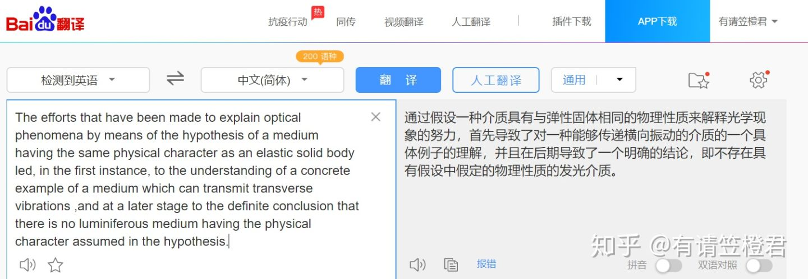 图片10知云文献翻译软件既是一款阅读英文pdf文献或pdf书籍的翻译软件，同时也是一款功能非常强大的pdf阅读器，几乎可以替代adobe pdf 或FoxitReader等pdf阅读器。软件非常小巧。支持多个翻译引擎，桌面版支持WINDOWS系统。操作方法是Ctrl键＋C复制译文。后期会增加一键复制功能。右上方有多个翻译引擎供切换选择。
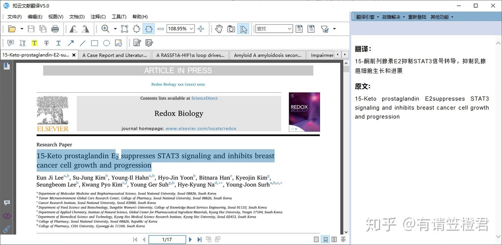 图片112.Saladict:沙拉查词
传送门：谷歌浏览器插件
朋友推荐的一款插件，Saladict是一个很好用的网页划词翻译Chrome插件，其最突出的功能在于可以在阅读网页文献时，实时划词翻译，很方便。
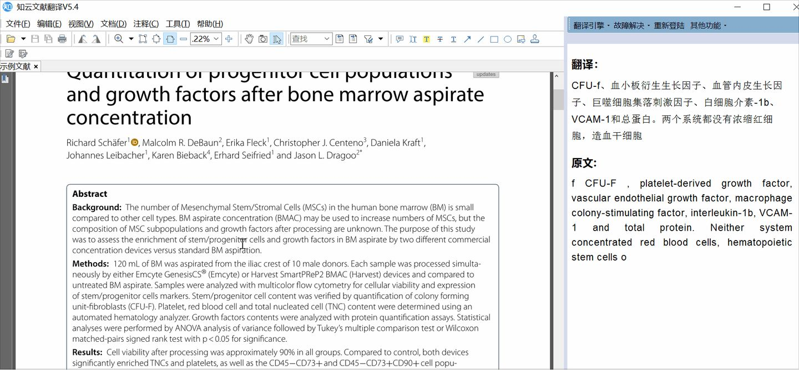 图片12Saladict 还支持包括网页翻译、生词本、快捷键、剪贴板翻译、生成当前页面二维码、导出查询结果为图片等在内的强大高级功能。
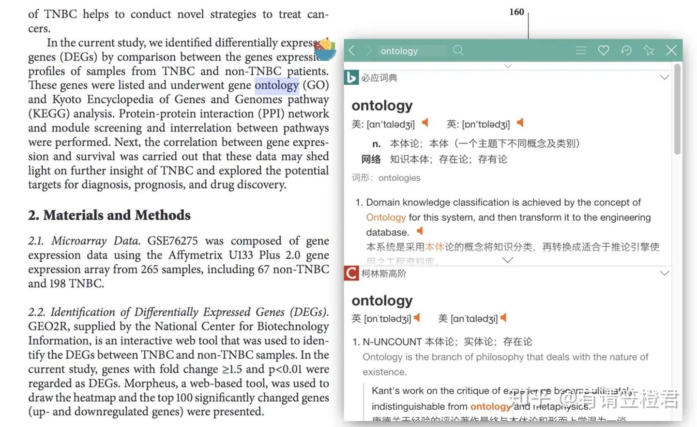 图片133.Transmate
传送门：http://www.urelitetech.com.cn/
Transmate单机版是免费提供给个人译员使用的辅助翻译软件。Transmate单机版集翻译记忆、自动排版、在线翻译、低错检查、支持Trado记忆库、支持多种文件格式、支持多种语言等功能于一体，最大限度减少重复翻译工作量、提高翻译效率、确保译文的统一性。比较专业的译员专用的辅助翻译工具，单机版是免费的，总体评价较高。
图片13 以上就是本文的推荐，日后还会多多分享与翻译与语言有关的信息。希望大家多多支持指正~